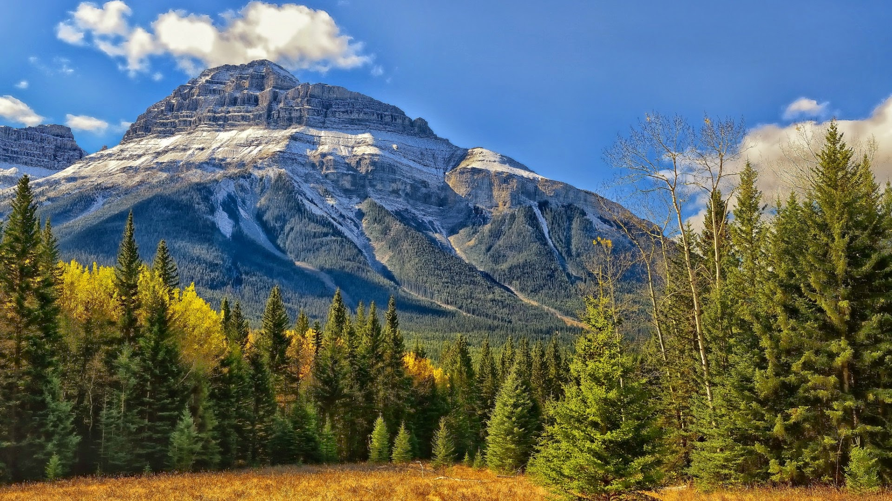
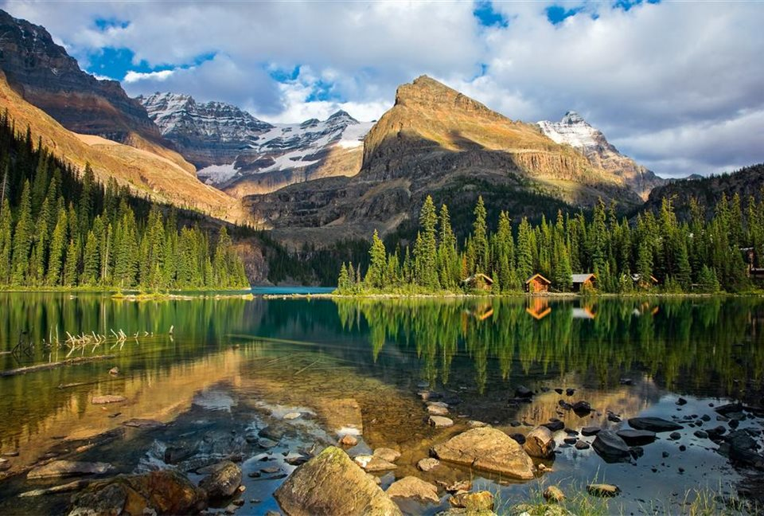
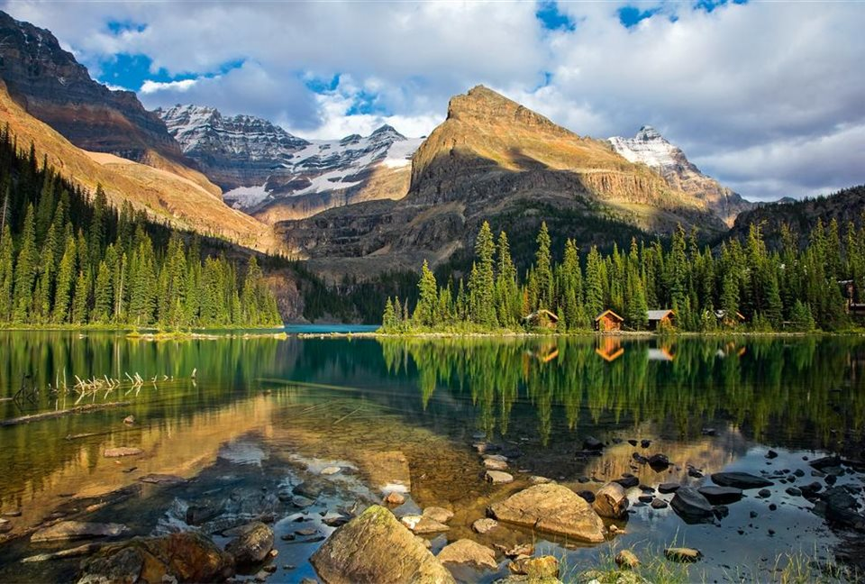

Aqui se puede ingresar una ves que haya adquirido un boleto para pacticar alpinismo y senderismo, con esta informacion usted podra tener la seguridad del rastreo de su ruta. Una ves que haya puesto su direccion uted debera seguir a pie de letra ya que en dado caso de salirse de su rumbo sera multado por 300 dolares. Evitemos mas Extravios en esta montaña.
Leer antes de ingresar al registro.
Sobre mas montañas...
Aqui se muetran mas montañas.
 
